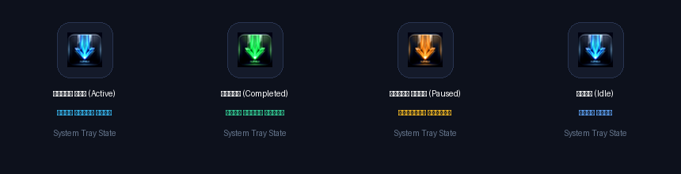

نسق (NDM) هو الجيل الجديد من برامج التحميل المصممة لويندوز. يضاعف سرعة تحميلك حتى 10 أضعاف بتقنية التجزئة المتقدمة، مع التقاط مباشر للفيديوهات، وتكامل ذكي مع كافة المتصفحات ونظام تحديثات تلقائي متكامل.

واجهة عصرية بتصميم داكن فاخر، شريط أدوات مألوف، وجداول بيانات دقيقة تمنحك تحكماً مطلقاً في كل بايت يتم تنزيله.
إدارة كافة التنزيلات بتصنيف ذكي للملفات (برامج، فيديوهات، مضغوطات، مستندات) مع شريط أدوات تحكم سريع.
يقسم الملف إلى أجزاء متعددة ويقوم بتحميلها بالتوازي مستهلكاً كامل سعة اتصالك بالإنترنت بكفاءة وسرعة فائقة.
التقاط وتحميل الفيديوهات من يوتيوب، فيسبوك، إكس، تيك توك، فيميو بجودات متعددة حتى 4K مع دمج الصوت تلقائياً.
حدد وقت البداية والنهاية لتحميل المقطع الذي يهمك فقط من الفيديو دون الحاجة لتنزيل كامل المحتوى.
بضغطة واحدة، يمكنك جلب وتنزيل كامل حلقات الكورسات التعليمية أو قوائم التشغيل دفعة واحدة وبترتيب دقيق.
تكامل تلقائي مع Google Chrome و Microsoft Edge و Brave مع زر تحميل عائم وقوائم سريعة بزر الفأرة الأيمن.
فحص أوتوماتيكي عند التشغيل أو عبر قائمة Help للتأكد من حصولك دائماً على أحدث الميزات واستقرار الأداء.
تتغير إضاءة أيقونة البرنامج بجوار الساعة فورياً مع حالة التنزيل لتمنحك متابعة فورية دون الحاجة لفتح النافذة:

يقوم برنامج **نسق NDM** بفتح ما بين 8 إلى 32 مسار اتصال متوازي مع السيرفر. كل مسار يقوم بجلب جزء مختلف من الملف، ويتم دمج الأجزاء فائق السرعة وبشكل مباشر على القرص بدون إهدار للذاكرة أو إبطاء للجهاز.
برنامج التثبيت الشامل المعتمد، خفيف وسريع ولا يحتاج لأي برامج مساعدة. يدعم كافة إصدارات ويندوز الحديثة والقديمة.
تنزيل NDM_Setup.exe (الإصدار 1.2.0)